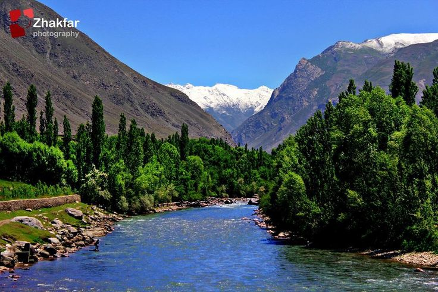

From hidden trails to iconic landmarks, come see the world through my eyes.
Latest Posts
The Beauty of Bangladesh
Jaflong is a picturesque destination in northeastern Bangladesh, nestled at the foot of the Meghalaya hills along the banks of the Piyain River. Known for its stunning natural beauty, Jaflong features crystal-clear waters, rolling hills, and lush tea gardens. It's a popular spot for both tourists and locals, offering scenic views, traditional Khasi villages, and unique stone collection activities. The serene atmosphere and rich cultural heritage make Jaflong a perfect getaway for nature lovers.

The Natural Beauty of Afghanistan
The Panjshir Valley, nestled in the Hindu Kush mountains of northeastern Afghanistan, is a historic and geographically significant region renowned for its stunning natural beauty and strategic importance. Carved by the Panjshir River, the valley stretches for over 100 kilometers, characterized by rugged, snow-capped peaks, fertile agricultural lands along the riverbanks, and numerous small villages. Throughout history, its formidable terrain has made it a natural fortress, most famously serving as a stronghold of resistance against both the Soviet invasion in the 1980s and the Taliban in the 1990s and more recently. Beyond its military significance, the valley is also known for its emerald mines and a vibrant cultural heritage shaped by its resilient Tajik population.
The Beauty of Heaven in Switzerland
Oeschinensee, or Lake Oeschinen, is a breathtakingly beautiful mountain lake nestled above Kandersteg in the Bernese Oberland of Switzerland, a UNESCO World Heritage site. Fed by the meltwaters of surrounding glaciers, its waters boast an astonishing turquoise hue, reflecting the towering snow-capped peaks of the Blüemlisalp, Doldenhorn, and Fründenhorn that dramatically encircle it. A popular destination for hikers and nature lovers, the lake offers stunning panoramic views, opportunities for boating and fishing in the summer, and ice skating in the winter, making it a quintessential postcard-perfect example of the Swiss Alps' majestic natural grandeur.